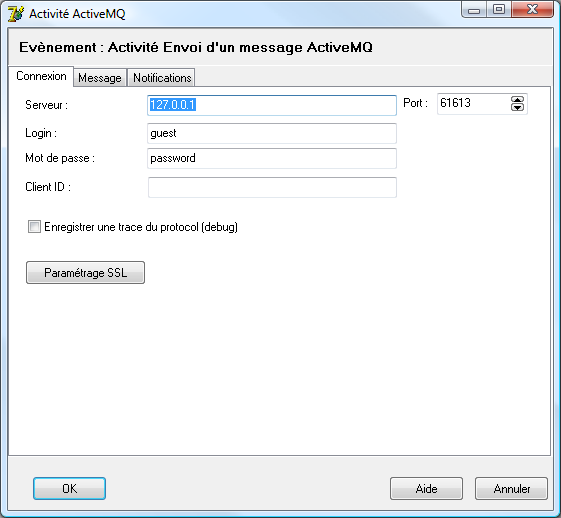
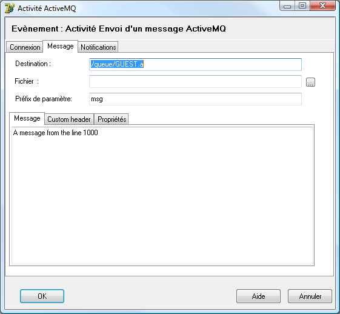
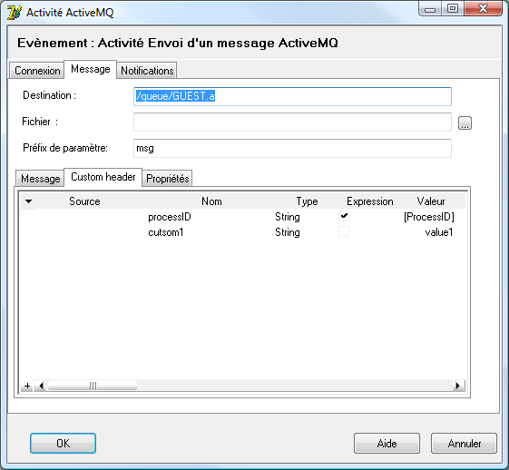
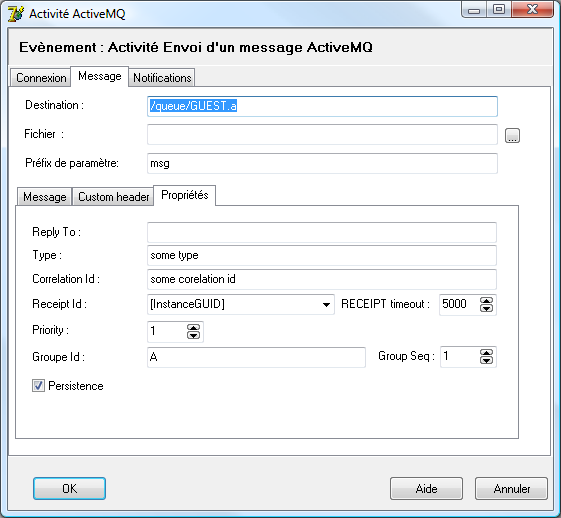

Envoyer un message ActiveMQ (activity bp)
De Wiki1000
Cette activité permet d'envoyer un message sur une file d'attente ActiveMQ.
| Tip : Les activités ActiveMQ utilisent le protocole STOMP, celui-ci doit être configuré sur le serveur ActiveMQ |
Paramétrage de connexion

- Serveur / Port
- Point d'accès STOMP du Serveur ActiveMQ
- Login / Mot de passe (Optionnel suivant la configurationdu Serveur)
- Compte utilisateur sur le serveur ActiveMQ
- Client ID (Optionnel)
- Identifiant du client.
- Paramétrage SSL
Paramétrage du message

- Destination
- Le nom de la destination (file d'attente ou sujet)
| Tip : Cette zone doit respecter la convention de nommage de Active MQ, /queue/... pour une file, /topic/... pour un sujet |
- Fichier (optionnel)
- Une référence de fichier dont le contenu sera placé dans le contenu du message
- Préfix de paramètre
- Si renseigné les propriétés du message seront copiées dans l'instance
- Contenu (optionnel)
- Un texte qui sera placé dans le contenu du message si le fichier n'est pas renseigné.
Paramétrage des propriétés supplémentaire du message

- Custom header
- Permet de renseigner des propriétés supplémentaires du message. Ces informations seront associées au message et pourront être exploitées dans les sélecteurs ou les consommateurs du message.
Paramétrage des propriétés du message

Cet onglet permet de renseigner les propriétés standard du message, reportez vous à la documentation ActiveMQ pour plus d'informations.
- Reply To:
- Indique une destination auquel le consommateur du message doit répondre.
- Type (libre utilisateur)
- Type du message
- Corellation Id (libre utilisateur)
- Information permettant de rapprocher des messages
- Receipt Id (libre utilisateur)
- Identifiant pour le consommateur (ce n'est pas l'identifiant ActiveMQ du message)
- Priority
- Priorité (1..9) du message
- Group ID, Group Seq
- Informations permettant de regrouper et d'ordonner des messages.
- Persistence
- Indique si le message doit être stocké de façon persistante dans le serveur ActiveMQ
Voir aussi :
| Whos here now: Members 0 Guests 1 Bots & Crawlers 0 |